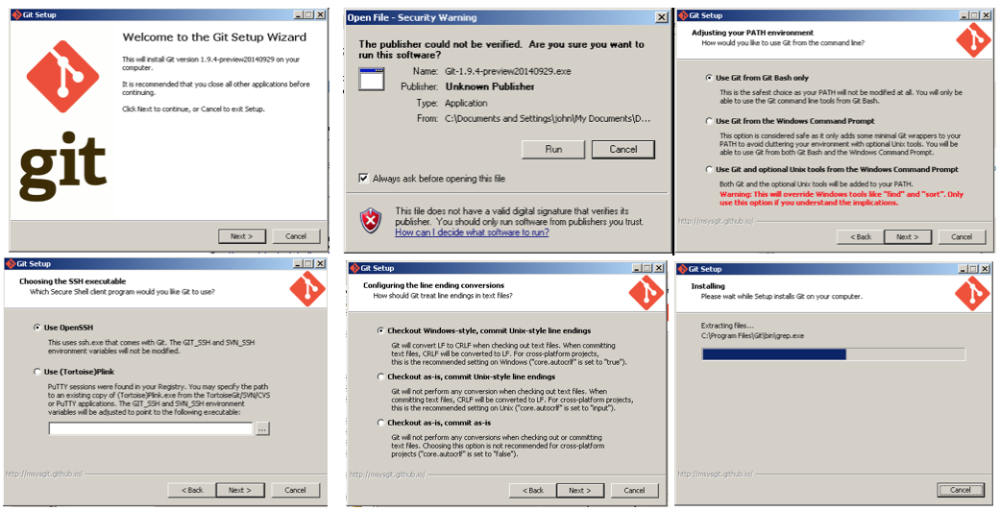
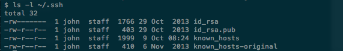
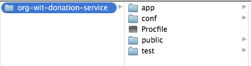
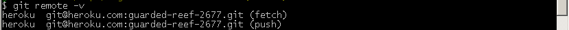
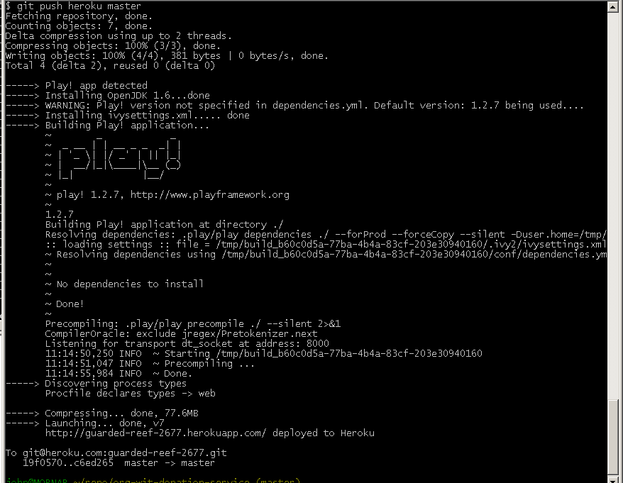

Objectives
- Deploy the donation-service app to Heroku
- The app is available to download in the Archives page
Git Bash
Download and install Git for Windows.
- This will be used in this lab. We shall refer to as Git Bash.

All the following commands should be run within the Git Bash terminal, not the standard windows terminal (Command Prompt).
SSH Keys
This section applies only if you do not have SSH keys on your computer. We shall explain shortly how you can check whether or not keys are present.
Official Heroku documentation on managing SSH keys is available here
Your computer will communicate with Heroku using Secure Shell (SSH).
Here are brief instructions on how to check for the presence of SSH keys on your computer and to generate them if necessary.
Git Bash should have an SSH client. Verify this with the following command:
ssh -v
The response should be similar to this:

Check if you already have SSH keys by checking for the presence of the.ssh folder and if it exists, listing its contents:
ls -l ~/.ssh
If keys are present then the response should be something simiar to that shown in Figure 3:

If keys are not present then generate a set with this command:
ssh-keygen
Accept the default prompts and in particular when prompted for a password and to confirm the password simply hit the return key on both occasions but without typing any characters for the password.
- That is: do not password protect the keys.
Confirm that keys have been successfully generated by checking the contents of the .ssh folder which should be similar that shown in Figure 3 above.
Local Repository
Create a directory on your computer named, for example, org-wit-donation-service.
In Git Bash terminal cd into this new directory.
cd org-wit-donation-service
Create a new empty repository:
git init
Using a file manager or otherwise, copy the contents of the donation-service project that you can download in the Archives page to the org-wit-donation-service folder.

Create and add a file named ProcFile to the root of org-wit-donation-service.
Ensure that the .gitignore file is present in the root of org-wit-donation-service.
Add all to the repo and commit:
git add --all
git commit -m 'first commit'
Verify by running the command
git status
The response should as follow:

Heroku repository
Create an account on Heroku.
- Note carefully your login and password.
Download and install Heroku Toolbelt for Windows
- Close and reopen Git Bash following installation of Toolbelt.
-
Verify installation ok by typing
heroku --version
-
The response should be something like:
heroku/toolbelt/3.12.1 (i386-mingw32) ruby/1.9.3
Login in to your heroku account from Git Bash
heroku login
- You will be prompted for you email and password.
- Successful authentication will be confirmed.
Next create an app and repository on Heroku as follows:
heroku create
- The response will be something like this:

Notice the default name assigned by Heroku to the remote app.
Verify with the command
git remote -v
and observe a response similar to that in Figure 2.

Now add your SSH keys to Heroku:
heroku keys: add

Finally, push the local repo to Heroku:
git push heroku master
The response should be somewhat similar to that shown in Figure 4.

We shall now test the service:
- In the specific case of this lab we have been randomly assigned a remote Heroku repo named guarded-reef-267.git.
- The convention for construction a URI to access this repo or service can easily be deduced by studying the URI for this specific service:
http://guarded-reef-2677.herokuapp.com/api/users
- The portions /api/users is determined by how we, the developers, wrote the application (donation-service).
- Notice where the actual name of the repo is located in the URI:
Copy this URI into a brower's navigation bar: unfortunately an application error is flagged.
- The reason for this is that we have not set up a suitable database on Heroku. We shall attend to this shortly.
Changing name of Heroku app
We shall now change the Heroku-assigned name guarded-reef-2677 to a more meaningful name org-wit-donation-service-id where id is your email address excluding @, periods, underscores and so on. For example john_doe@organs.com becomes johndoeorganscom. This is just a suggestion to ensure that the name you choose for the app on Heroku will be unique.
Run the following command within the Heroku terminal:
heroku apps:rename org-wit-donation-service-id
A typical response is shown in Figure 5:

Heroku Database
You created a Heroku app in an earlier step (using the command heroku create)
- A database was made available as part of the app creation process.
- You can verify this by running the following command:
heroku pg:info
A typical response is depicted in Figure 1.

In this case the DATABASE_URL is HEROKU_POSTGRESQL_MAUVE_URL.
Log in to Heroku website for more detailed information such as is shown here in Figure 2 for the current project.

In order to make use of this database do the following:
- Modify the application.conf file:
- Comment out any database activation statments such as, for example, db = mem.
- Add the following block to the end of the file.
#================heroku databse config config=========================
db=${DATABASE_URL}
jpa.dialect=org.hibernate.dialect.PostgreSQLDialect
jpa.ddl=update
#================end database config heroku config====================
- In the Heroku terminal add and commit the changes:
git add --all
git commit -m 'database configured'
git push heroku master
The response should be similar to that shown in Figure 3.

Test App
You can test that the application is working correctly in a number of ways, listed here:
- Run the following command: output similar to that in Figure 4 indicates your app has been successfully deployed.
heroku ps

- Next run the command to open a browser: Figure 5 shows the command and additionally the response to the command and the output in the browser if the app is running correctly.
heroku open

- Finally, introduce this URI in a browser's navigation bar: the expected response is shown here in Figure 6:
http://org-wit-donation-service-id.herokuapp.com/api/users
Reset Database
You can reset the database as follows:
- First obtain the DATABASE_URL with the following command:
heroku pg:info
A typical response is depicted in Figure 7.
In this case the DATABASE_URL is HEROKU_POSTGRESQL_MAUVE_URL. The command to run to reset is:
heroku pg:reset HEROKU_POSTGRESQL_MAUVE_URL
Follow the instructions as indicated in Figure 8.

References
Deploying with Git
Regenerate project
You can regenerate your work environment as follows:
- Create a working folder, for example workspacePlay
- Change directory into this folder
cd workspacePlay
- If not already logged in to Heroku, do so now:
heroku login
Obtain a clone of the remote repo:
git clone git@heroku.com:org-wit-donation-service-id.git

The project will now be recreated in a folder org-wit-donation-service-id.
- Change directory to org-wit-donation-service-id.
- Run the command to allow the project to be imported into an Eclipse workspace:
play eclipsify
Launch Eclipse, switch to the workspace workspacePlay and import the project:

Note that earlier we pushed to Heroku with the following command:
git push heroku master
This will not now work. To understand why check the remote:
git remote -v

Notice that it is origin, not heroku.
Working with origin will work ok.
But perhaps it is better to preserve Heroku convention which requires that we:
- Remove origin as the remote
- Replace with heroku
This can easily be achieved with the following commands:
git remote remove origin
git remote add heroku git@heroku.com:org-wit-donation-service-id.git
Then, push with the following command:
git push heroku master
Exercises
Archive of donation-service as used in this lab